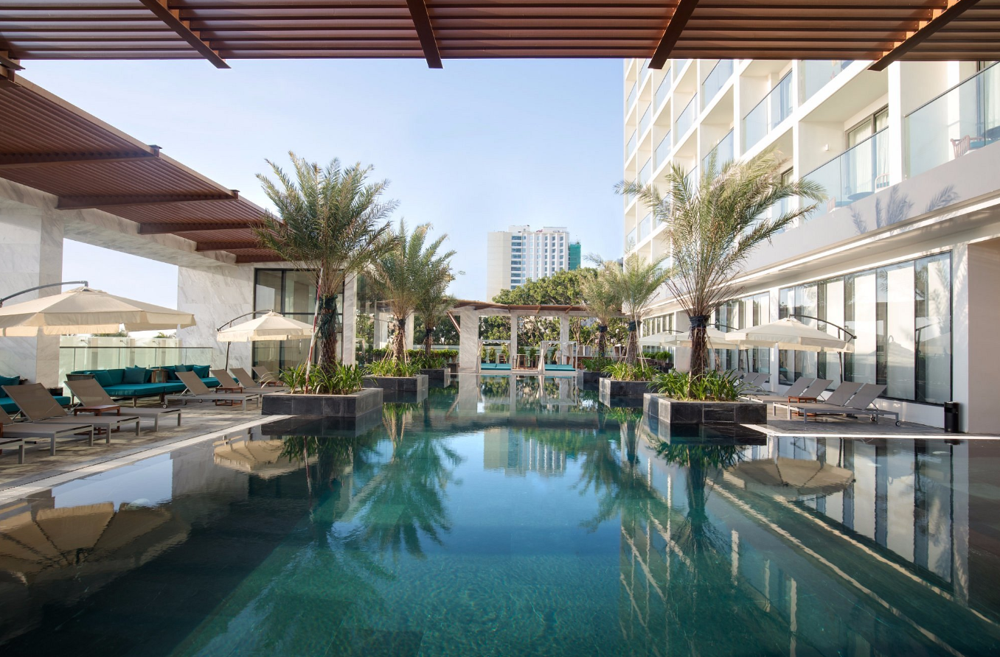
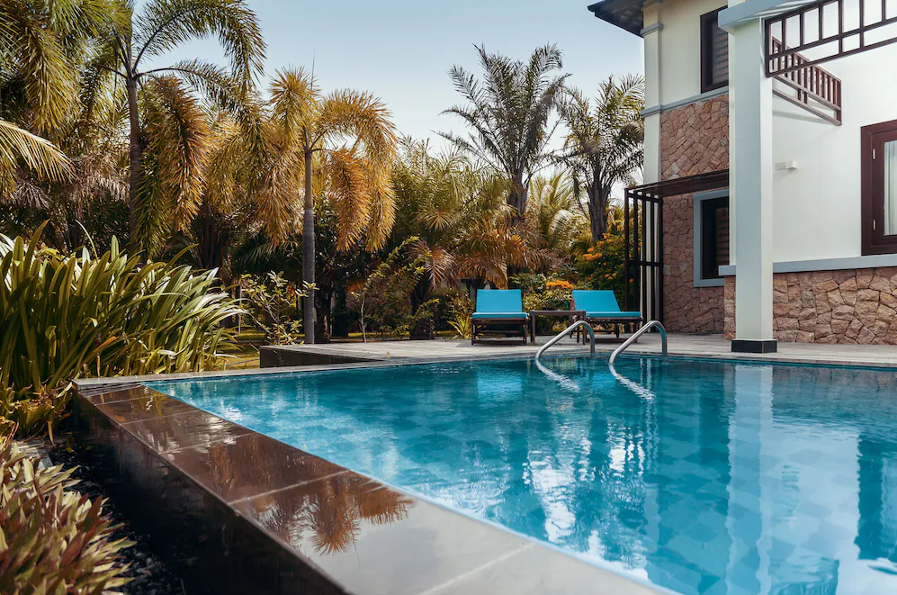

- Vietnam
- Nah trang
- Cam Ranh international air port
Ⅰ.숙소
- 24.12.12 ~ 12.12 마리스 호텔 나트랑
- 24.12.13 ~ 12.15 시타딘스 베이프런트 나트랑
- 24.12.15 ~ 12.17 두옌하 리조트 깜란


Ⅱ.여행 일차별 세부일정
- 1일차 - 24.12.13
혼총곶, 포나가르 사원, 담시장
- 2일차 - 24.12.14
시내 돌아다니기
- 3일차 - 24.12.15
오전8시 시타딘 체크아웃, 판랑투어출발, 오후 3시 두옌하 체크인
- 4일차 - 24.12.16
두옌하 휴식, 시내 셔틀버스로 다녀오기
- 5일차 - 24.12.17
오후 8시 두옌하 레이트 체크아웃, 오후 11시 깜란 공항 도착, 18일 새벽 02시 비행기 탑승
Ⅲ.NahTrang ATM Location